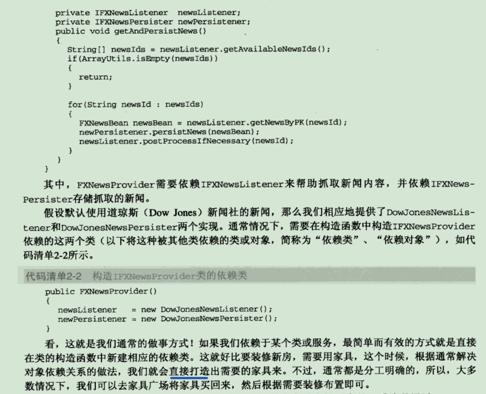
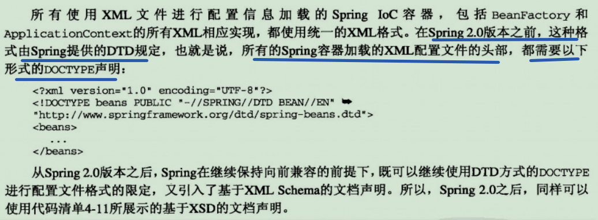
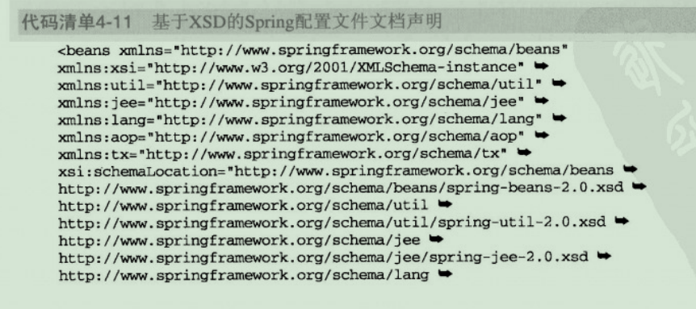
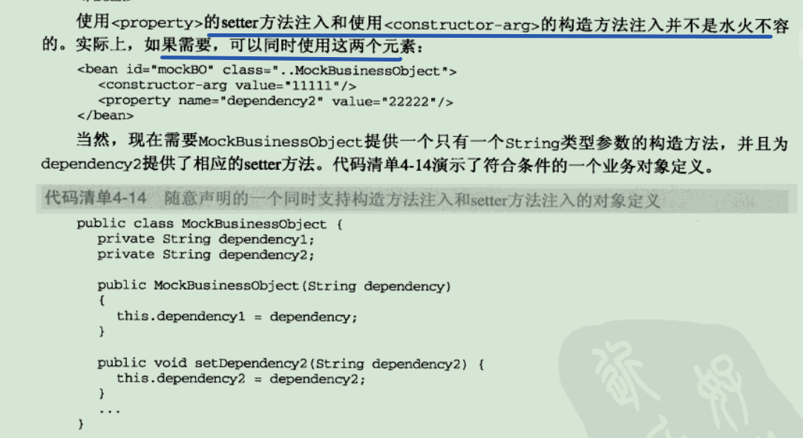
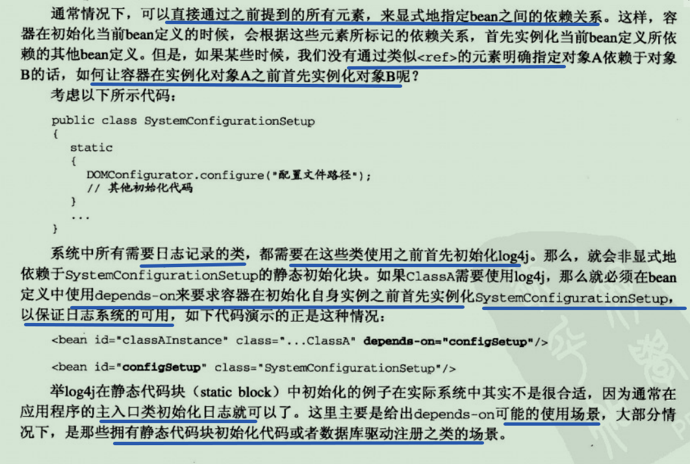
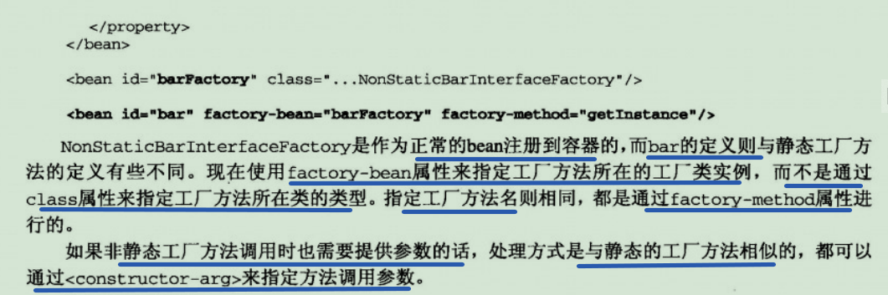

1. 掀起spring的盖头来
EJB1和EJB2过于厚重,导致spring轻量级框架的出现
1.1 spring之崛起
- EJB需要引入拥有EJB Container的应用服务器
- EJB使应用程序的部署和测试更加困难
- EJB在分布式场景中才能发挥最大作用
1.2 spring框架概述
spring基于POJO(Plain Old Java Object 简单java对象)的轻量级开发理念,提供各种框架服务

- spring构建在core核心模块之上,为我们提供了IoC容器实现,以依赖注入的方式管理对象之间的依赖关系.
- spring AOP以AOP的形式增强各POJO的能力,进而补足OOP/OOSD的缺憾,spring AOP符合AOP Alliance规范,采用Proxy模式构建,与IoC容器相结合
- 在IoC和AOP基础上,spring提供了数据访问和事务管理的抽象和集成服务.数据访问方面,实现JDBC最佳实践,并为主流ORM框架提供统一的集成支持;事务管理抽象层是springAOP的最佳实践,提供编程式事务和声明式事务的支持
- 还提供了对各种Java EE服务的支持
- Web层,spring MVC和对其他web框架的集成支持
1.3 spring大观园
- spring web flow(SWF),构建于spring mvc之上,简化开发,让ajax和jsf享受一等公民待遇
- spring web services,采用契约优先的开发方式,创建文档驱动web服务
- spring security,提供应用安全解决方案
- spring DM,融合spring框架和OSGI的优点
- spring batch,批处理开发框架
- spring integration,企业级spring框架集成解决方案
- spring LDAP,模板方法模式,简化LDAP相关操作
- spring IDE,eclipse的插件,方便spring开发
- spring modules,对可选的工具和类库进行管理,防止spring过于臃肿
- spring javaconfig,可以看作是依赖注入的另一种选择
- spring Rich Client,为基于swing的gui开发提供支持
- spring .NET
- spring beandoc,可以根据spring应用配置,创建文档和图表
2. spring的IoC容器
2.1 我们的理念是: 让别人为你服务
IoC翻译为控制反转,又有依赖注入的叫法(本书将依赖注入DI和控制反转IoC看作等同的,但是其他观点认为依赖注入是IoC的一种方式)
案例:

当被注入对象需要外部依赖,只需要向IoC服务申请,IoC就会将该依赖的对象传给被注入对象,而不需要被注入对象自己去创建被依赖对象.被注入和被依赖对象都由IoC统一管理

2.2 手语,呼喊,还是心有灵犀
Martin Fowler的文章”Inversion of Control Containers and the Dependency Injection pattern”提到三种依赖注入方式: 构造方法注入,setter方法注入,接口注入
2.2.1 构造方法注入
被注入对象在自己的构造方法里声明需要依赖哪些对象,由IoC服务在实例化被注入对象时识别构造方法参数列表并注入

2.2.2 setter方法注入
setter方法就是通过被注入对象提供的set方法来注入依赖,相对于构造方法注入比较宽松,可以在实例化后再注入依赖
2.2.3 接口注入
被注入对象需要实现一个接口,该接口提供用于注入依赖的方法(方法参数是被依赖对象),才能让IoC容器进行注入.IoC服务通过接口来了解需要哪些对象
接口注入更繁琐和死板,有点多此一举的感觉
2.2.4 三种注入方式的比较
- 接口注入: 基本退役,强制被注入对象实现不必要的接口,带有侵入性
- 构造方法注入: 优点是可以马上使用;缺点是依赖多时需要很长的参数列表,非必要的依赖需要多个不同的构造方法,无法继承,无法设置默认值
- setter方法注入: 优点是可以被继承,可以设默认值,方法名随意;缺点是无法实例化后马上使用
2.3 IoC的附加值
无侵入性,可拓展,可测试……
更好地支持TDD(测试驱动开发)


3. 掌管大局的IoC Service Provider
业务对象可以通过ioc方式声明相应的依赖,但是需要通过某种角色或服务将这些相互依赖的对象绑定到一起,这个角色或服务就是IOC service provider
IOC Service Provider是抽象的概念,指代任何将Ioc场景中业务对象绑定到一起的实现方式
3.1 IoC Service Provider的职责
主要有两个: 业务对象的构建管理和业务对象间的依赖绑定
- 业务对象的构建管理: 业务对象无需关心所依赖的对象如何构建如何取得,而是由Ioc Service Provider将对象的构建逻辑(new)从客户端对象那里剥离出来,以免这部分逻辑污染业务对象的实现
- 业务对象间的依赖绑定: 是Ioc Service Provider的最终使命,它结合之前构建和管理的所有业务对象,以及各个业务对象间可以识别的依赖关系,将对象所依赖的对象注入绑定,从而保证每个业务对象在使用的时候,可以处于就绪状态
3.2 运筹帷幄的秘密—–IoC Service Provider如何管理对象间的依赖关系
ioc service provider需要知道所管理和掌握的被注入对象和依赖对象之间的对应关系,才能正常进行依赖注入
以下是主流的ioc service provider使用的注册对象管理信息的方式
3.2.1 直接编码方式
当前大部分ioc容器都应该支持直接编码方式.(PicoContainer,Spring,Avalon)
在容器启动前,我们通过程序编码的方式将被注入对象和依赖对象注册到容器中,并明确它们之间的依赖注入关系


3.2.2 配置文件方式

3.2.3 元数据方式

4. spring的ioc容器之beanFactory
spring的ioc容器是一个提供ioc支持的轻量级容器
spring提供了两种容器类型: BeanFactory和ApplicationContext
- BeanFactory: 默认采用延迟初始化策略(lazy-load),只有当客户端对象需要访问容器中某个受管对象时,才对受管对象进行初始化和依赖注入.适用于资源有限,并且功能要求不是很严格的场景
- ApplicationContext: 在BeanFactory基础上实现,提供更多高级特性,默认容器启动会全部初始化并绑定完成.适用于资源充足,要求更多功能的场景
beanfactory是生成bean的工厂,spring提倡POJO,则把每个业务对象都看作一个javaBean对象
beanfactory类似组装厂,将所以业务对象给他,他来依赖注入,客户端之间从中取得成品
4.1 拥有BeanFactory之后的生活
有了ioc容器,程序员不需要管理依赖关系,就算没有ioc服务,也应该使用ioc的思想来开发
xml方式管理依赖关系

创建bean工厂,传入配置文件路径,工厂读取文件内容并依赖注入


4.2 BeanFactory的对象注册与依赖绑定方式
4.2.1 直接编码方式
BeanFactory是一个接口,它的实现类来进行具体的管理逻辑.DefaultListableBeanFactory实现了BeanFactory和BeanDefinitionRegistry接口,BeanFactory主要定义了访问容器内管理的bean的方法,而BeanDefinitionRegistry主要定义了注册bean的方法

每一个受管对象,在容器中都会有一个BeanDefinition的实例与之对应,该BeanDefinition的实例负责保存对象的所有必要信息,包括其对应的对象的class类型、是否是抽象类、构造方法参数以及其他属性等.当客户端向BeanFactory请求相应对象时,BeanFactory会通过这些信息返回一个完备的对象实例.
4.2.2 外部配置文件方式
springIoc容器支持两种配置文件格式: Properties和XML格式
采用外部配置文件时,有一个统一的处理方式,先根据不同的文件格式,给出相应的BeanDefinitionReader实现类,由reader的实现类来负责读取配置文件内容并映射到BeanDefinition,然后将映射后的BeanDefinition注册到一个BeanDefinitionRegistry,之后BeanDefinitionRegistry完成Bean的注册和加载.
4.2.2.1 Properties配置格式的加载
4.2.2.2 xml配置格式的加载
xml格式是spring支持最完整、功能最强大的表达方式.spring2.x之前,使用DTD(Document Type Definition)实现文档的格式约束,2.x之后,使用XSD(xml schema definition)的约束方式,不够一般情况下DTD还是有效,DTD到XSD只是形式上的转变
4.2.3 注解方式

4.3 BeanFactory的XML之旅
4.3.1 <beans>和<bean>


4.3.1.1 <beans>之唯我独尊
beans是xml配置文件最顶层的元素,包含0或1个<description>和多个<bean>以及<import>和<alias>
<beans>拥有<attribute>属性对内部的<bean>进行统一的默认行为设置,包括:
4.3.1.2 <description> <import> <alias>
这几个标签通常不是必须的
- description: 给配置文件添加描述信息
- import: 引入其他xml里的配置,比如a.xml依赖b.xml里定义的某些bean,可以用
引入,但是一般容器可以加载多个xml配置,所以这个功能也不一定用得上 - alias: 给bean起别名,如果bean的name太长,可以用<alias name=”xxxxx” alias=”x”/>来简化
4.3.2 孤孤单单一个人
单一对象配置
<bean id="xxx" class="..impl.xxxxxx">
</bean>
id属性
通常,每个注册到容器的bean都需要一个id来(指定beanName)和别的bean区分,当然,也有例外,比如内部bean和不需要根据beanName明确依赖关系的场合
还可以使用name属性来指定bean的别名(alias)
<bean id="xxx" name="xxx1" class="..impl.xxxxxx">
</bean>
name属性可以使用id不能使用的一些字符,还可以使用逗号、空格或冒号分割多个bean,name的作用和alias差不多
class属性
class是必须配置的,指明该bean的类型,少数情况下(如使用抽象配置模型)不需要指定
4.3.3 Help Me,Help You
4.3.3.1 构造方法注入的xml之道
<bean id="xxx" class="..xxxxxx">
<constructor-arg>
<ref bean="xxx1">
<constructor-arg/>
<constructor-arg>
<ref bean="xxx2">
<constructor-arg/>
</bean>
<!-- 简写形式 -->
<bean id="xxx" class="..xxxxxx">
<constructor-arg ref="xxx1"/>
<constructor-arg ref="xxx2"/>
</bean>
有时候,容器无法明确配置项与对象构造方法参数列表的对应关系,比如对象存在多个构造方法,参数类别数目相同但是类型不同,容器无法区分用哪个构造方法来实例化,或者构造方法同时需要传入多个相同类型的对象
- type属性
- index属性
某个业务对象同时需要多个相同类型的参数,此时需要index参数

4.3.3.2 setter方法注入的xml之道
xml为setter方法注入方式提供了<property>标签,它有一个name属性,用来指定对应的变量名称,然后通过value或ref或内嵌的其他元素来指定具体的依赖对象引用或值
<bean id="x" class="..xxx">
<property name="y">
<ref bean="y1">
</property>
<property name="z">
<ref bean="z1">
</property>
</bean>
<!-- 简化 -->
<bean id="x" class="..xxx">
<property name="y" ref="y1"/>
<property name="z" ref="z1"/>
</bean>
如果使用了setter方式注入,需要确保有提供默认的无参构造
setter和构造方法注入可以同时使用
<bean id="x" class="..xxx">
<constructor-arg value="111"/>
<property name="z" value="222"/>
</bean>

4.3.3.3 <property>和<constructor-arg>中可用的配置项
<value>和<ref>可以表示基本数据类型和对象引用,其实还有很多其他的元素可以使用: bean、ref、idref、value、null、list、set、map、props
- value
value可以注入简单数据类型,还可以指定其他java语言中的原始类型和它们的包装器(wrapper)类型,比如int和Integer,容器在注入的时候会做适当的转换
value是最”底层”的元素,内部不能再嵌套别的元素
- ref
可以引用容器中其他的对象实例,可以通过local、parent、bean属性来指定引用对象的beanName

- idref
- 内部<bean>
- <list>
用于注入java.util.List及其子类或数组类型的依赖对象,可以通过<list>有序地为当前对象注入以collection形式声明的依赖
- <set>
list可以有序加载依赖,而set是无序的
- <map>
注入map类型,可以通过指定的键key获取相应的值
- <props>
是简化后的map,只能指定stirng类型的key和value
- <null>
4.3.3.4 depends-on
有时候没有通过直接声明描述依赖关系,但是某个对象需要另一个对象先实例化,因为该对象需要用到另一个对象
日志系统需要先初始化log4j才能用,但是没有在其他地方显示声明依赖,需要用depends-on来要求容器先实例化日志对象

大部分情况下,depends-on的可能场景是拥有静态代码块初始化代码或数据库驱动注册之类的场景
4.3.3.5 autowire
除了在配置里明确指定bean之间的依赖关系,spring还提供了根据bean定义的某些特点将相互依赖的bean直接自动绑定的功能.spring提供了5种绑定方式(no、byName、byType、constructor、autodetect)
- no 默认的绑定方式,不采用任何形式的自动绑定,而是让用户手动依赖管理
- byName 按照类中声明的实例变量的名称,与xml中声明的bean定义的beanName值进行匹配,匹配的bean将自动绑定到当前实例变量上
- byType 根据当前bean定义类型,分析其相应的依赖对象类型,然后到容器中寻找需要的类型的对象实例,绑定到当前bean,如果找到多个,会报错
- constructor byName和byType是针对property(属性)的绑定,constructor是针对构造方法参数的绑定,根据构造方法需要的参数去寻找相应类型的bean,如果找到多个也会报错,constructor和byType类似

- autodetect byType和constructor的结合,有默认无参构造方法,就优先使用byType,否则就使用constructor模式,如果根据构造方法注入后还有剩下的属性没有注入,就会使用byType注入剩下的属性
4.3.3.6 dependency-check
4.3.3.7 lazy-init
4.3.4 继承?我也会!
4.3.5 bean的scope
scope被很多资料称为作用域,它是用来声明容器中的对象所应该处于的限定场景或者说对象的存活时间,当不在限定场景时,就被销毁
spring容器最初提供了两种bean的scope类型: singleton和prototype.在2.0之后,又引入了三种scope类型,即request、session、global session,这三种类型只能在web应用里使用
scope属性只能在XSD格式的文档声明中使用
4.3.5.1 singleton
配置的bean可以看作一个模板,容器根据模板创建对象,创建多少个,又让实例存活多久,都由scope决定.
singleton表示该bean在容器中只有一个实例,并且一直存活到容器退出
singleton的bean的特性
- 对象实例数量 每个容器中只存在一个共享实例,所有对该类型bean的依赖都引用这单一实例.
- 对象存活时间 从容器启动,到它第一次被请求而实例化开始,只要容器不销毁和退出,该类型的bean的单一实例就会一直存活

4.3.5.2 prototype
每次在接到prototype类型对象的请求时,会生成一个新的对象实例给用户,然后就不再管理该对象,而是由请求方自己管理该对象的生命周期
对于不能共享的对象类型,应该将其bean定义为prototype,通常是一些有状态的bean
4.3.5.3 request,session,global session
4.3.5.4 自定义scope类型

4.3.6 工厂方法与FactoryBean
面向接口编程提倡通过声明接口来避免依赖某个特定的接口实现类,但是还是要有一个方法将实现类和接口关联起来,这个时候就需要用到工厂类,不通过new具体实现类(如果改变还得每个用到的地方改),而是通过工厂来实现具体实现类(只需要改工厂类),然后返回给使用方
4.3.6.1 静态工厂方法(static factory method)
4.3.6.2 非静态工厂方法(instance factory method)

4.3.6.3 FactoryBean
4.3.7 偷梁换柱之术
- 方法注入